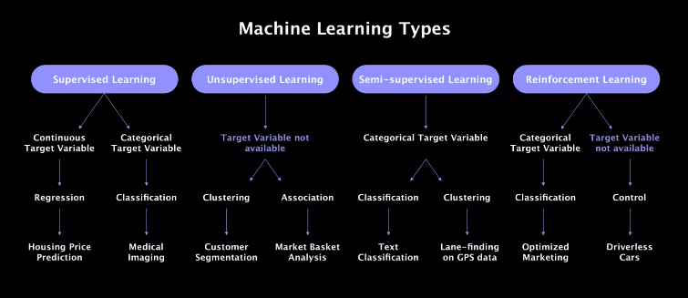
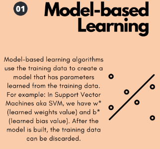
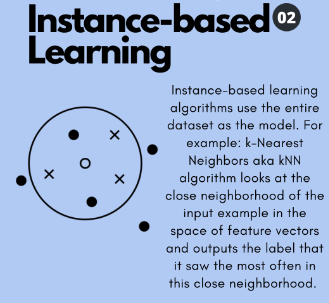
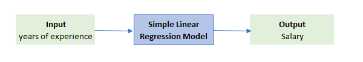
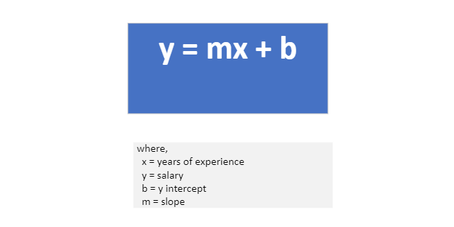
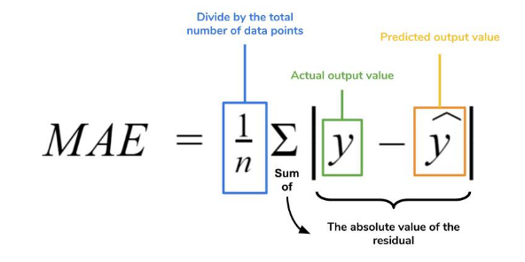
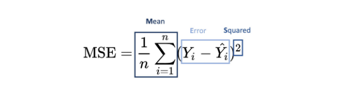
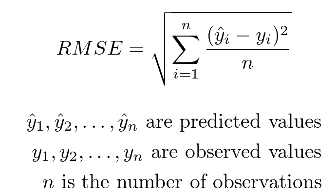
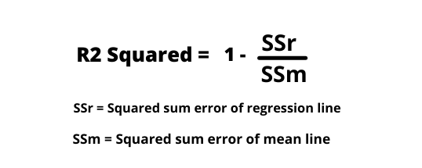
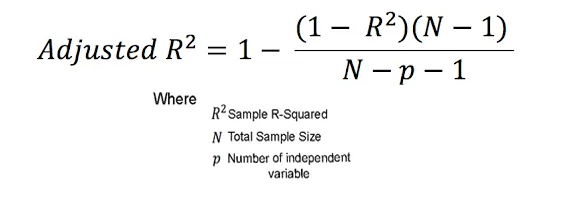

Types of machine Learning
Based on type of supervision
If we divide machine learning algorithms based on type of supervision needed, then we can segment as below:
- Supervised Learning When we have both input and target data
- Unsupervised Learning When we don't have a target variable
- Semi-Supervised Learning which is partially supervised and partially unsupervised
- Reinforcement Learning where there is no data to algorithm. It's like us human beings

Based on type of learning
If we divide machine learning algorithms based on learning, then we can segment as below:
- Model Based Learning: Where it creates a model
- Instance Based Learning: uses the whole data as model


Supervised Machine Learning
- Supervised machine learning is a type of machine learning that learns the relationship and patterns between input and output
- It uses algorithms that learn the relationship of Features and Target from the dataset. This process is referred to as Training or Fitting
- There are two types of supervised learning algorithms:
- Regression
- Classification
- Now lets try to understand a type of supervised ML algorithm known as linear regression
- There are mainly three types of linear regression
- Simple linear regression
- Multiple Linear regression
- Polynomial Linear regression
Simple Linear Regression
- It is a supervised machine learning algorithm
- When there is one input and one output then simple linear regression can be applied
- Below is an example data set
- So, when a 'years of experience' is given as input then we can predict the 'salary' using simple linear regression

- Note: When there are more than one inputs then it will need multiple linear regression
- How Simple LR works?
- First it plots all the plots to a 2-D graph and then finds the 'Best Fit' line
- A line of best fit is a straight line drawn through the center of a group of data points plotted on a scatter plot
- The red line below is the line of best fit

- The equation of line is y = mx + b

- Think of 'm' as weightage i.e. how much does the years of experience depends on salary. That's what slope signifies
- Think of 'b' as what would be the salary when 'years of experience' is zero. It is a default value when 'x'value is zero.
- So, the objective of linear regression is to find the best fit line
- and the assumption of linear regression is that a linear relationship occurs between two variables and fits a linear equation on the data
- How to find m and b ?
- There are two ways:
- Closed Form: where we directly apply a formula and the method is called OLS (Ordinary least square)
- The scikit-learn library uses OLS for linear regression
- Non Closed Form: where we use gradient descent (differentiation). This is used because in higher dimension using OLS becomes complicated
- The SGD Regressor library uses gradient descent for linear regression
- Positives:
- Performs very well for linearly seperated data.
- Easy to implement and is interpretable.
- Negatives:
- Pron to outliers and overfitting
Regression Metrices
- MAE (Mean Absolute Error)

- Positives:
- Tne unit of MAE and output are same as it is just an absolute formula
- Robust to outliers
- Negatives:
- The graph is not differentiable at zero.
- MSE (Mean Squared Error)

- Positives:
- Can be used as loss function as it is differentiable
- Negatives:
- The MSE result is squared than that of output so difficult to interpret
- Prone to outliers and penalizes them more due to square in formula
- RMSE (Root Mean Squared Error)
- It's the square root of MSE

- Positives:
- RMSE resultis same as that of output
- Negatives:
- Prone to outliers and penalizes them more due to square in formula
- R2 Score
- It is independent of context
- also known as co-efficient of determinant or also known as Goodness of Fit
- Here we compare how much better is the linear regression line than the mean line of outputs

- If R2 square is 1 that means the line perfectly fits the data
- If R2 square is 0 that means the regression line is same as mean line
- How to interpret R2 score
- If R2 score is 0.80 then that means input column is able to explain 80% variance in output column
- Positives:
- Model interpretability: R-squared is easy to understand, as it represents the proportion of the total variation in the data that the model can explain. For example, an R-squared value of 0.8 indicates that 80% of the variation in the dependent variable can be explained by the independent variables in the model.
- Model comparability: R-squared provides a standardized metric to compare the performance of different models or the same model with different sets of independent variables. It allows for an objective evaluation of which model best captures the underlying patterns in the data.
- Model selection: R-squared can help in selecting the most appropriate model when multiple regression models are available. A higher R-squared value generally indicates a better fit, although other factors, such as the complexity of the model and the risk of overfitting, should also be considered.
- Negatives:
- The flaw is that if we keep adding input column then R2 score tends to increase. Even if we add irrelevant feature addition increases the R2 score or remains same. It should reduce ideally
- Adjusted R2 Score
- It helps to reduce the negative of R2 score

- Positives:
- The adjusted R2 will penalize you for adding independent variables that do not fit the model.
- In regression analysis, it can be tempting to add more variables to the data as you think of them. Some of those variables will be significant, but you can’t be sure that significance is just by chance. The adjusted R2 will compensate for this by that penalizing you for those extra variables.
TL;DR
- Lets quickly go over the key takeaways from this section: